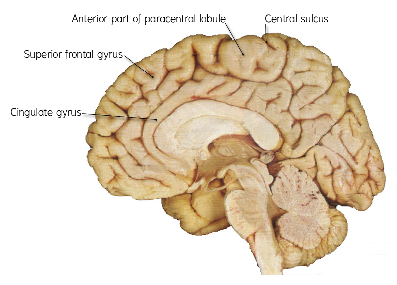
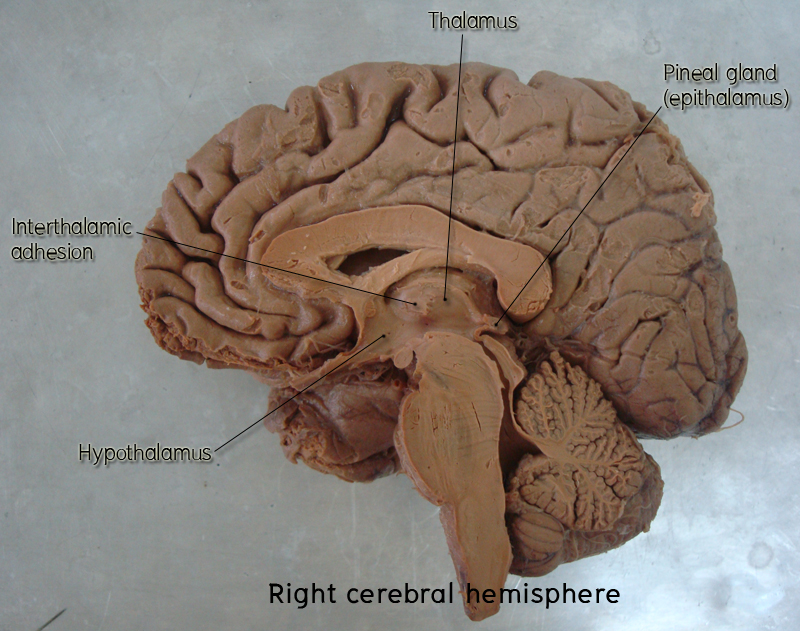

สมองส่วนหน้า
สมองส่วนหน้า (forebrain) ประกอบขึ้นด้วย cerebral hemispheres และ diencephalon ทั้งสองข้าง โดยตั้งอยู่ใน anterior และ middle cranial fossa และแยกออกจากสมองส่วนหลัง (hindbrain) ด้วย tentorium cerebelli ซึ่งทำหน้าที่เป็นหลังคาของ posterior cranial fossa

Cerebral hemispheres เป็นส่วนที่เจริญมาจาก telencephalon แบ่งออกเป็น 2 ซีก ด้วย longitudinal fissure ทำหน้าที่ประสานความรู้สึกขั้นสูงทางด้านจิตใจ เช่น การตระหนักในความรู้สึก อารมณ์ การเรียนรู้ และความจำ ความฉลาด ความคิดสร้างสรรค์ และภาษา เป็นต้น
Diencephalon ประกอบด้วย 4 ส่วน ได้แก่ thalamus, hypothalamus, epithalamus และ subthalamus ทำหน้าที่ผสมผสานข้อมูลที่ผ่านขึ้นมาจาก brainstem และ spinal cord แล้วส่งข้อมูลเหล่านั้นขึ้นไปยัง cerebral hemisphere รวมทั้งผสมผสานควบคุม visceral activitiesต่างๆของร่างกายด้วย
